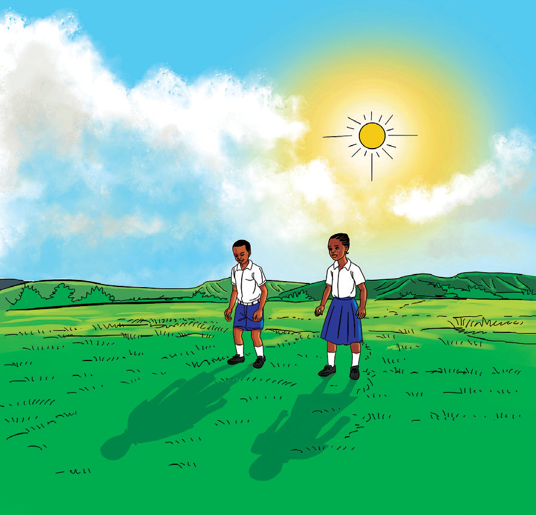
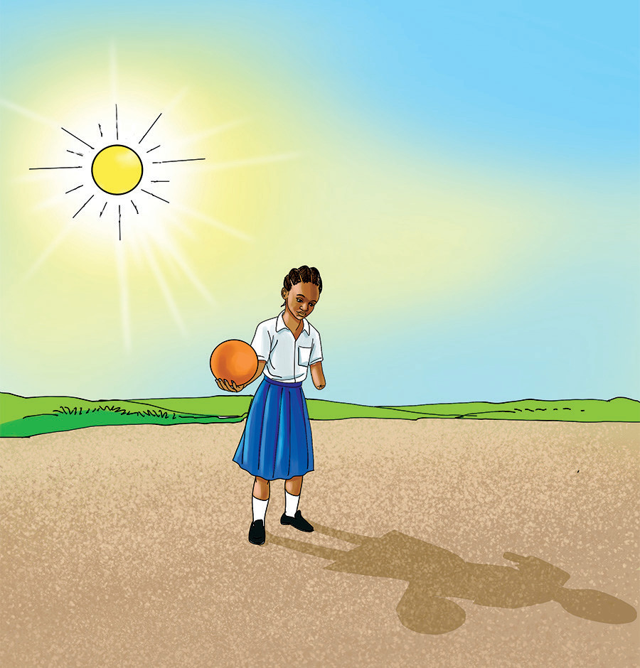

Kutokea kwa vivuli
Chunguza Kielelezo namba 8, kisha fanya Zoezi la 1.


Kielelezo namba 8: Kutokea kwa kivuli
Chunguza Kielelezo namba 8, kisha fanya Zoezi la 1.


Kielelezo namba 8: Kutokea kwa kivuli